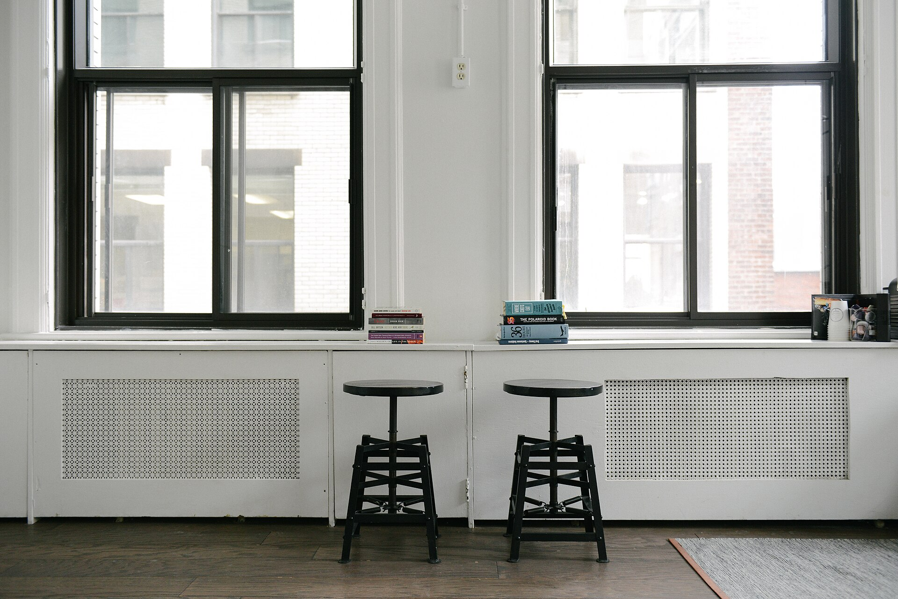

第一章
本のある空間
本棚のそばで、時間の流れがほんの少しゆっくりになる。
本に囲まれて
Buku Cafe ＆ Book は、本のある空間でのんびりと過ごせるカフェです。視線を上げれば、そこには本棚。手にとる一冊を選ぶ時間も、カップを傾けながらぼんやり眺める時間も、どちらもここでの大切な過ごし方です。
忙しい日々のあいだに、一冊ぶんの休憩をはさんでみてください。
※蔵書の内容や、本のご利用方法は確認中です。ご来店前にお問い合わせください。

ひとりの時間にも
ひとりでも、気兼ねなく。静かに本と向き合う時間にも、窓の外をただ眺める時間にも、やさしく寄り添う場所でありたい。そんな時間のための空気を、ここに用意しています。
過ごし方のヒント
- 本を開く気になる一冊を選んで、最初のページから。
- 一杯を味わう香りと温度を感じながら、ひと口ずつ。
- 窓の外を眺める本を閉じて、少しだけぼんやりする時間も。
※あくまでイメージです。店内でのお約束事は、ご来店前にお問い合わせください。